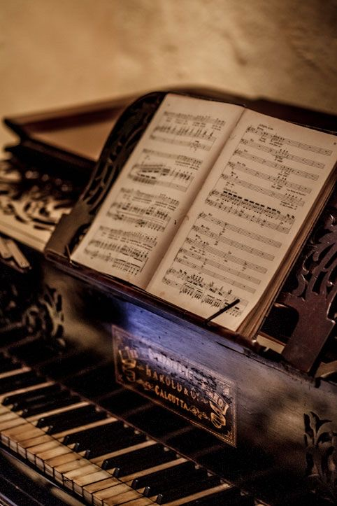

More About Music
Instruments generate sounds, as does the human voice. Some sounds with a specific PITCH are called notes. These sounds are then grouped to create RHYTHM and MELODY. Some music is created spontaneously, and some is composed over many years.
Music can raise someone's mood, get them excited, or make them calm and relaxed. Music also - and this is important - allows us to feel nearly or possibly all emotions that we experience in our lives. The possibilities are endless.
Music is basic human functions. Humankind cannot function without one another. We have the burning desire to create, whatever it may be and however tiny or grand. The interaction with sound is unavoidable, either to make it or take pleasure in it. People have always found music significant in their lives, whether for enjoyment in listening, the emotional response, performing, or creating. This is no different for classical music or contemporary concert music. Both musics have immense worth for our society; however, the problem we all know in this field is that this music is little known and hence underappreciated. As a musician and artist it is my responsibility that others can learn to enjoy the art for which I have utter passion.
Who started Music? They usually put forward several answers, including crediting a character from the Book of Genesis named Jubal, who was said to have played the flute, or Amphion, a son of Zeus, who was given the lyre. One popular story from the Middle Ages credits the Greek philosopher Pythagoras as the inventor of music. |
 |